Characters
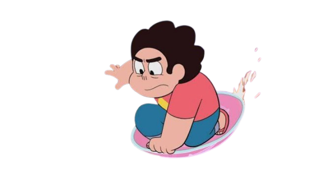
Steven Universe is a kind-hearted, cheerful, and empathetic boy who is half-human and half-Gem. As the son of Rose Quartz, he inherits incredible powers and joins the Crystal Gems to protect Earth. Steven believes in understanding others, solving problems peacefully, and giving everyone a chance to change. Despite facing difficult challenges, he stays hopeful and uses his compassion, courage, and determination to help others and discover who he truly is.
Greg Universe is a laid-back, kindhearted, and easygoing human who values freedom, music, and living life on his own terms. He is warm, goofy, and affectionate, often using humor to connect with others. Although he lacks traditional parenting skills and can be irresponsible at times, Greg deeply loves his son, Steven, and tries his best to support him. He is emotionally open, accepting, and nonjudgmental, preferring to let people make their own choices rather than forcing his beliefs onto them.
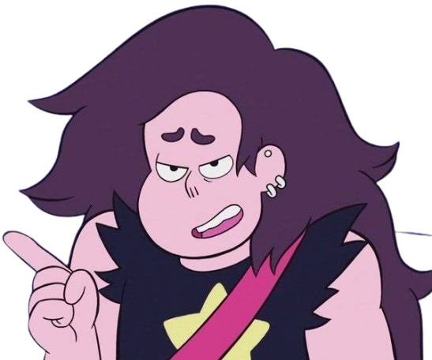
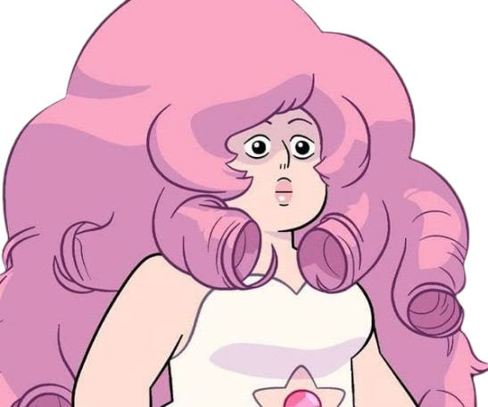
Rose Quartz is a charismatic, compassionate, and idealistic Gem who deeply values life, freedom, and individuality. She is warm, playful, and nurturing, inspiring others with her kindness and belief that everyone deserves the chance to change. Despite her loving nature, Rose is also impulsive, secretive, and emotionally complicated, often struggling to understand the consequences of her choices. She has a deep appreciation for Earth and its living things, but her mysterious past reveals that even someone with good intentions can make mistakes that deeply affect others.
Pearl is a graceful, intelligent, and disciplined Crystal Gem who serves as one of Steven’s guardians and mentors. Originally a servant to Pink Diamond, Pearl struggles with her past, her unrequited love for Rose Quartz, and her desire to feel useful and needed. She is perfectionistic, protective, and sometimes overbearing, but beneath her elegant and composed exterior lies deep insecurity and emotional vulnerability. Throughout the series, Pearl learns to let go of the past, embrace her independence, and discover her own identity beyond her devotion to others.
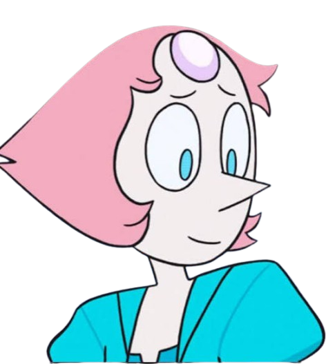
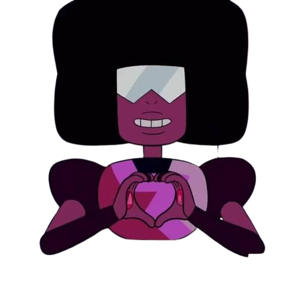
Garnet is a strong, calm, and dependable Crystal Gem who serves as a leader and protector for Steven. She is the fusion of Ruby and Sapphire, representing the power of love, trust, and commitment. Garnet is confident and level-headed, often offering wise advice while remaining composed in difficult situations. Although she can seem mysterious and reserved, she deeply cares for her friends and values individuality, emotional honesty, and the freedom to choose one’s own future.
Amethyst is a fun-loving, rebellious, and energetic Crystal Gem who brings humor and spontaneity to the group. She enjoys joking around, shapeshifting, and breaking the rules, often acting more carefree and immature than the other Gems. However, beneath her playful exterior, Amethyst struggles with insecurity and feelings of inadequacy because she was created differently from other Gems. Throughout the series, she learns to accept herself, embrace her uniqueness, and recognize that her worth isn’t defined by how she compares to others.
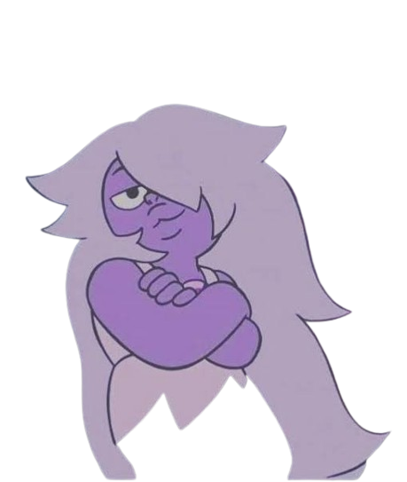
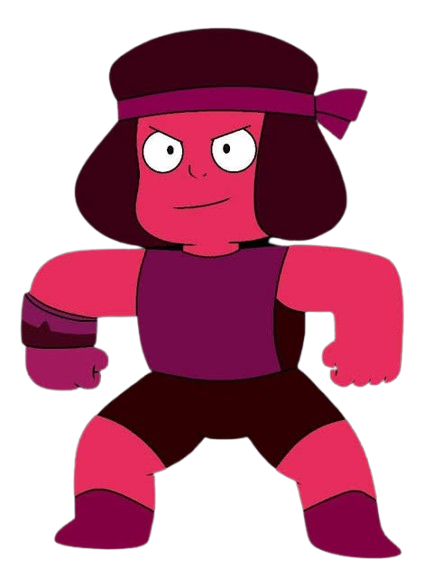
Ruby is a passionate, hot-headed, and fiercely loyal Gem who is deeply devoted to Sapphire. She is impulsive, protective, and quick to act on her emotions, often putting the people she loves before herself. Although Ruby can be stubborn and insecure, she has a warm heart and a strong sense of loyalty. Through her relationship with Sapphire, she learns to embrace her emotions, trust herself, and understand that love means choosing to be together rather than depending on one another.
Sapphire is a calm, gentle, and elegant Gem who can see possible futures through her special abilities. She is logical and reserved, often relying on her visions to guide her decisions, but she deeply cares for Ruby and values their relationship above all else. Although Sapphire can sometimes seem distant or overly dependent on what she believes is destined to happen, she learns to embrace uncertainty and make her own choices. Her character represents patience, devotion, and the importance of balancing logic with emotion.
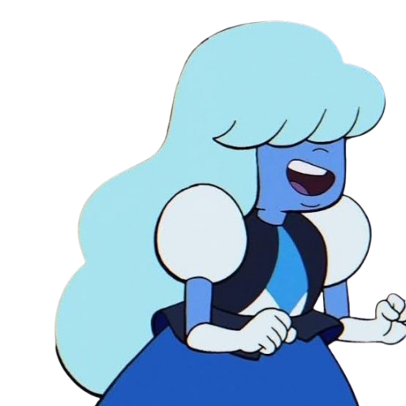
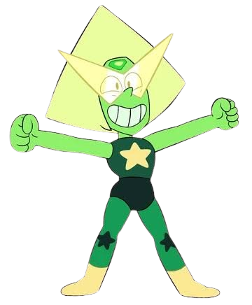
Peridot is an intelligent, analytical, and eccentric Gem with a blunt personality and a strong interest in technology. She is socially awkward, highly logical, and often takes things literally, sometimes coming across as arrogant or insensitive. Peridot is also outspoken, curious, and easily frustrated when things don’t go according to plan. Despite her serious, technical nature, she has a quirky sense of humor and can be surprisingly expressive and enthusiastic about the things she enjoys.
Lapis Lazuli is a quiet, guarded, and emotionally complex Gem with powerful water-manipulating abilities. She tends to be sarcastic, withdrawn, and distrustful of others due to her painful past, often preferring isolation over forming close relationships. Although she can be pessimistic and defensive, Lapis is also sensitive, thoughtful, and deeply emotional beneath her distant exterior. She values her independence and personal space, but she also has a playful side that emerges when she feels safe and comfortable.
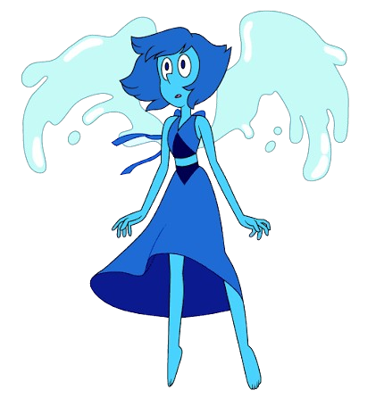
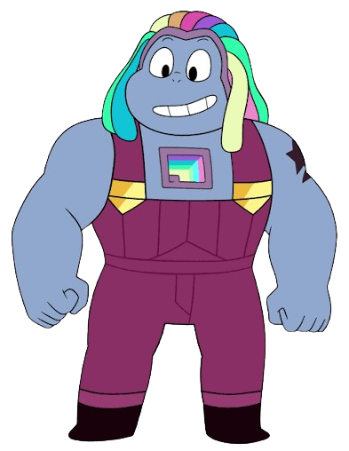
Bismuth is a strong, passionate, and energetic Crystal Gem who loves building and crafting weapons. She is friendly, outspoken, and hardworking, with a playful sense of humor and a fierce loyalty to her friends. Bismuth believes in fighting for freedom and protecting those she cares about, making her courageous and determined. However, she can also be stubborn and intense, especially when her strong beliefs conflict with others. Beneath her tough exterior, she has a warm heart and deeply values teamwork and friendship.